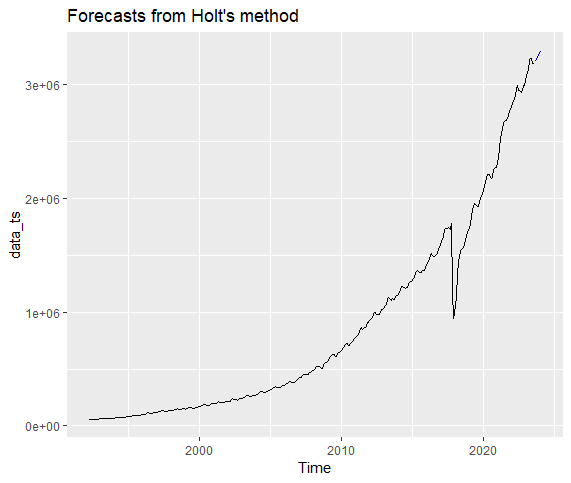
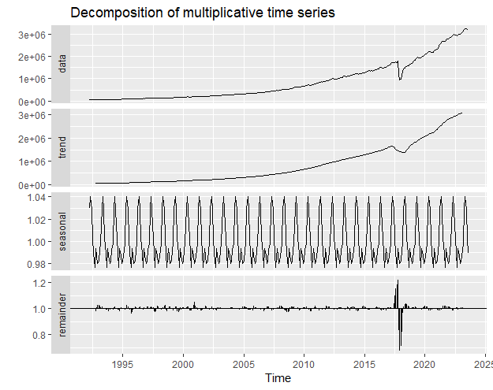
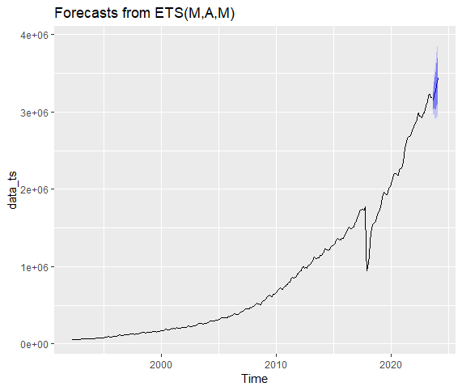
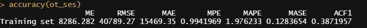
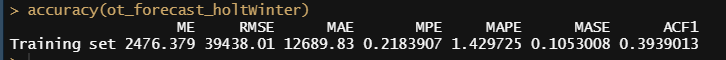

Ris used everywhere espically in Data Science. As Part of our Time Series Analysis and Forecasting Course, our mentor Dr.Prashobhan Palakkeel has given an assignment to do an Exponential Smoothing and ARIMA to analysis a TimeSeries data. I will be explaining the results that I have got.
About the Dataset
I have used the Dataset “HBS Table No.163 Components of Money Stock”. The Series that I have used from the dataset is, “Currency in Circulation”. I have used Exponential smoothing technique and ARIMA methods for modelling and forecasting. I have included the R code that I have used for forecasting and the outputs of each model and comparison between both models.
Analysis of Dataset
The First process after downloading the data set is to read the dataset in R. The Series “Currency in Circulation” has been copied to clipboard. The below R code reads the data from the clipboard and stores it in the variable currency_in_circulation_data.
currency_in_circulation_data <- read.delim('clipboard', header = FALSE)
currency_in_circulation_data
After Reading, I have converted the data to vector.
vec <- as.vector(t(currency_in_circulation_data))
vecThe Vector data has been reversed because, the data in the dataset starts from 2022-23 and ends in 1991-92. The Data should start from 1991-92 and end in 2022-23. To achieve this, the data is been reversed using the rev() function in R.
rev_currency_in_circulation_data <- rev(vec)
rev_currency_in_circulation_dataWe are converting the reversed vector data which is stored in the variable rev_currency_in_circulation_data into a timeseries data. The Start year will be 1992 - April Month and ends in 2023 - August Month. The Frequency is 12 because, number of months is 12.
data_ts <- ts(rev_currency_in_circulation_data, start = c(1992,4), end= c(2023,8) ,frequency = 12)
data_tsRemoving NA values and plotting the TimeSeries data
#Removing NA Values in TimeSeries Data
data_ts< na.omit(data_ts)
data_ts
plot(data_ts)
boxplot(data_ts)
boxplot.stats(data_ts)Output Screenshots
Reversed Vector
Time Series Data
TimeSeries plot

TimeSeries boxplot

Modelling and forecasting the given time series using the Exponential Smoothing Method
Simple Exponential Smoothing
ot_ses <-ses(data_ts, h=100)
ot_ses #Printing the forecast
summary(ot_ses[["model"]])
autoplot(ot_ses)Holt's Method
ot_holt <- holt(data_ts, h=100, PI=FALSE)
ot_holt #Printing the forecast
summary(ot_holt[["model"]]) #Summary of Holt's Method
autoplot(ot_holt) #Plotting the Forecast from Holt's Exponential Smoothing.Holt's Winter Seasonal Method
fit1 <- hw(data_ts, seasonal = "additive")
fit2 <- hw(data_ts, seasonal = "multiplicative")
autoplot(fit1)
autoplot(fit2)
# Decomposition of time series data
ot_holtsWinter <- decompose(data_ts, "multiplicative")
autoplot(ot_holtsWinter)
#Forecasting for next 100 months using Holt's Winter Method
ot_forecast_holtWinter <- forecast(ets(data_ts, model="AAA"), h=100)
ot_forecast_holtWinter #Printing the forecast
summary(ot_forecast_holtWinter[["model"]]) #Summary of Holt's Winter Method
autoplot(ot_forecast_holtWinter) #Plotting the ForecastOutput Screenshots of Exponential Smoothing Method
Summary of Simple Exponential Smoothing
Plot of Forecasts from Simple Exponential Smoothing
Summary of Holt's Method
Plot of Forecasts from Holt's Method
Decomposition of time series data
Summary of Holt's Winter Method
Plot of Forecasts from Holt's Winter Method
Modelling and forecasting the given time series using the ARIMA method
ARIMA model for exponential series
ot_arima <- auto.arima(data_ts, trace = TRUE)
ot_arima
#Forecasting using arima - Next 100 Values
ot_forecast_arima <- forecast(ot_arima, 100)
ot_forecast_arima #Printing the Forecast
autoplot(ot_forecast_arima) #Plotting the Forecast
Augmented Dickey-Fuller Test
data_ts %>% autoplot()
data_ts %>% log() %>% autoplot()
data_ts %>% log() %>% diff %>% autoplot()
data_ts %>% log() %>% diff(lag=12) %>% autoplot()
data_ts %>% log() %>% diff -> prabhu_dif
#Augmented Dickey-Fuller Test
adfTest(prabhu_dif)
plot(stl(data_ts, s.window = 13))
#check if data is stationary. Stationary if the value is test static value is < critical value
#KPSS TEST
library(urca) # Assumption that, H0 is <- Data is stationary.
summary(ur.kpss(data_ts))
ndiffs(data_ts) #Number of time we have to diff to make the data stationary.
data_diff <- diff(data_ts, 2) #making the data stationary.
#testing if it become stationary
summary(ur.kpss(data_diff))AUTO-ARIMA model
fit <- auto.arima(data_diff)
fit
acf(data_diff, lag.max = 100)
pacf(data_diff, lag.max=20)
ts.plot(data_diff)
#Plotting the forecasts from arima
ot_arima_forecast <- forecast(fit, h=100)
ot_arima_forecast
autoplot(ot_arima_forecast)Root Mean Square Error
getrmse <- function(x,h,...)
{
train.end <- time(x)[length(x)-h]
test.start <- time(x)[length(x)-h+1]
train <- window(x,end=train.end)
test <- window(x,start=test.start)
fit <- Arima(train,...)
fc <- forecast(fit,h=h)
return(accuracy(fc,test)[2,"RMSE"])
}
getrmse(data_ts,h=24,order=c(3,0,0),seasonal=c(2,1,0),lambda=0)
getrmse(data_ts,h=24,order=c(3,0,1),seasonal=c(2,1,0),lambda=0)
getrmse(data_ts,h=24,order=c(3,0,2),seasonal=c(2,1,0),lambda=0)
getrmse(data_ts,h=24,order=c(3,0,1),seasonal=c(1,1,0),lambda=0)
Output Screenshots of ARIMA Model
ARIMA model for exponential series
Plots of Forecasts from ARIMA

Augmented Dickey-Fuller Test
Augmented Dickey-Fuller Test
KPSS Unit Test
Forecast ARIMA(2,1,0)

RMSE
Comparision of Accuracy of All Models
Accuracy of Simple Exponential Smoothing
Accuracy of Holt’s Method
Accuracy of Holt’s Winter Method
Accuracy of ARIMA for Exponential Series
Accuracy of AUTO-ARIMA Model
Blog by,
Prabhu Aruchamy,
CB.BU.P2MBA21002.
5th trimester, MBA
Amrita School of Business,
Amrita Vishwa Vidyapeetham, Coimbatore.
“This blog is part of the assignments submitted for the course, Time series Analysis and Forecasting/one of the Business Analytics Electives Courses at Amrita School of Business, Coimbatore.”